Learning the Kalman Filter: a Feedback Perspective
A simulink model of Kalman filter organized as a feedback control system
Contents
The Kalman Filter
For a linear Gassian process with input u, output z and internal state, x
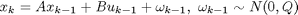
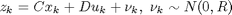
The Kalman filter is normally represented in two stages: a predict stage,
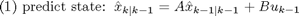
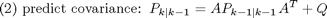
and a update stage
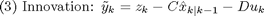
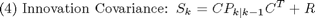
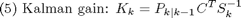
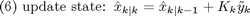
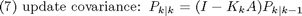
A Feedback View of the Kalman Filter
However, to view the Kalman filter as a feedback control system may provide more insight to understand its principle. Re-arrange the seven equations of the Kalman filter described above into the following groups:
Process model group:
Kalman filter gain group:
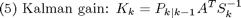
Estimation error:
Feedback control:
The re-organized equations show that the Kalman filter is a feedback control system, where the plant is the process model itsself, the controller is a time varying gain, whilst the measurement of the actual process is a reference signal to the feedback system. From this point of view, if the closed-loop system is stable, then eventually the estimation error will be zero.
It is worth to note that the Kalman filter gain only depends on model prarameters and the initial covariance (P0). It is independent from realtime measurement. Hence, the Kalman filter is a time-variant linear system.
The Simulink model
The above formulation is implemented in Simulink with different groups are encapsulated into subsystems so that the feedback relationship is clearly shown.

The following results show that this model produces exactly the same results as the Kalman filter simulink model does.
Example 1, Automobile Voltmeter
Modified from Michael C. Kleder's "Learning the Kalman Filter"
Define the system as a constant of 12 volts:
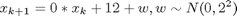
But the Kalman filter uses different model.
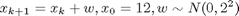
This example shows the Kalman filter has certain robustness to model uncertainty.
A = 0; B = 1; % this is original definition x(k+1) = 12 + w A1 = 1; B1 = 0; % this is original definition for Kalman filter % Define a process noise (stdev) of 2 volts as the car operates: Q = 2^2; % variance, hence stdev^2 Q1 = Q; % Define the voltmeter to measure the voltage itself: % y(k+1) = x(k+1) + v, v ~ N(0,2^2) C = 1; D = 0; C1 = C; D1 = D; % Define a measurement error (stdev) of 2 volts: R = 2^2; R1 = R; % Define the system input (control) functions: u = 12; % for the constant % Initial state, 12 volts x0 = 12; x1 = x0; %for Kalman filter % Initial covariance as C*R*C' P1 = 2^2; % Simulation time span tspan = [0 100]; [t,x,y] = sim('feedbackkf',tspan,[],[0 u]); figure hold on grid on % plot measurement data: hz=plot(t,y(:,2),'r.','Linewidth',2); % plot a-posteriori state estimates: hk=plot(t,y(:,3),'b-','Linewidth',2); % plot true state ht=plot(t,y(:,1),'g-','Linewidth',2); legend([hz hk ht],'observations','Kalman output','true voltage',0) title('Automobile Voltmeter Example') hold off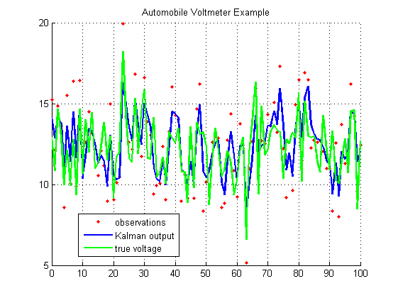
Example 2, Predict the position and velocity of a moving train,
Modified from "An Intuitive Introduction to Kalman Filter" by Alex Blekhman.
The train is initially located at the point x = 0 and moves along the X axis with velocity varying around a constant speed 10m/sec. The motion of the train can be described by a set of differential equations:
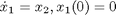
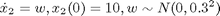
where x_1 is the position and x_2 is the velocity, w the process noise due to road conditions, wind etc.
Problem: using the position measurement to estimate actual velocity.
Approach: We measure (sample) the position of the train every dt = 0.1 seconds. But, because of imperfect apparature, weather etc., our measurements are noisy, so the instantaneous velocity, derived from 2 consecutive position measurements (remember, we measure only position) is innacurate. We will use Kalman filter as we need an accurate and smooth estimate for the velocity in order to predict train's position in the future.
Model: The state space equation after discretization with sampling time dt
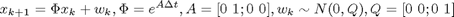
The measurement model is
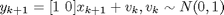
dt = 0.1; A = expm([0 1;0 0]*dt); B = [0;0]; Q = diag([0;1]); C = [1 0]; D = 0; R = 1; u = 0; x0 = [0;10]; % For Kalman filter, we use the same model A1 = A; B1 = B; C1 = C; D1 = D; Q1 = Q; R1 = R; x1 = [0;5]; %but with different initial state estimate P1 = eye(2); % Run the simulation for 100 smaples tspan = [0 200]; [t,x,y1,y2,y3,y4] = sim('feedbackkf',tspan,[],[0 u]); Xtrue = y1(:,1); %actual position Vtrue = y1(:,2); %actiual velocity z = y2; %measured position X = y3; %Kalman filter output t = t*dt; % actual time %%%%%%%%%%%%%%%%%%%%%%%%%%%%%%%%%%%%%%%% % Position analysis %%%%%%%%%%%%%%%%%% %%%%%%%%%%%%%%%%%%%%%%%%%%%%%%%%%%%%%%%% figure; subplot(211) plot(t,Xtrue,'g',t,z,'c',t,X(:,1),'m','linewidth',2); title('Position estimation results'); xlabel('Time (s)'); ylabel('Position (m)'); legend('True position','Measurements','Kalman estimated displacement','Location','NorthWest'); %%%%%%%%%%%%%%%%%%%%%%%%%%%%%%%%%%%%%%%% % Velocity analysis %%%%%%%%%%%%%%%%%% %%%%%%%%%%%%%%%%%%%%%%%%%%%%%%%%%%%%%%%% % The instantaneous velocity as derived from 2 consecutive position % measurements InstantV = [10;diff(z)/dt]; % The instantaneous velocity as derived from running average with a window % of 5 samples from instantaneous velocity WindowSize = 5; InstantVAverage = filter(ones(1,WindowSize)/WindowSize,1,InstantV); % figure; subplot(212) plot(t,InstantV,'g',t,InstantVAverage,'c',t,Vtrue,'m',t,X(:,2),'k','linewidth',2); title('Velocity estimation results'); xlabel('Time (s)'); ylabel('Velocity (m/s)'); legend('Estimated velocity by raw consecutive samples','Estimated velocity by running average','True velocity','Estimated velocity by Kalman filter','Location','NorthWest'); set(gcf,'Position', [100 100 600 800]);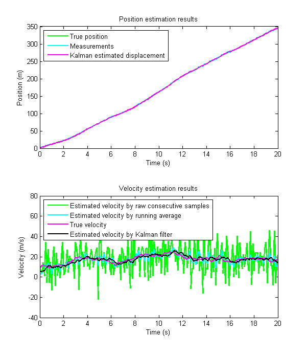
Example 3: A 2-input 2-output 4-state system
dt = 0.1;
A = [0.8110 -0.0348 0.0499 0.3313
0.0038 0.9412 0.0184 0.0399
0.1094 0.0094 0.6319 0.1080
-0.3186 -0.0254 -0.1446 0.8391];
B = [-0.0130 0.0024
-0.0011 0.0100
-0.0781 0.0009
0.0092 0.0138];
C = [0.1685 -0.9595 -0.0755 -0.3771
0.6664 0.0835 0.6260 0.6609];
D = [0 0;0 0];
% process noise variance
Q=diag([0.5^2 0.2^2 0.3^2 0.5^2]);
% measurement noise variance
R=eye(2);
% random initial state
x0 = randn(4,1);
% Kalman filter set up
% The same model
A1 =A;
B1 = B;
C1 = C;
D1 = D;
Q1 = Q;
R1 = R;
% However, zeros initial state
x1 = zeros(4,1);
% Initial state covariance
P1 = 10*eye(4);
% Simulation set up
% time span 100 samples
tspan = [0 1000];
% random input change every 100 samples
u = [(0:100:1000)' randn(11,2)];
% simulation
[t,x,y1,y2,y3,y4] = sim('feedbackkf',tspan,[],u);
% plot results
% Display results
t = t*dt;
figure
set(gcf,'Position',[100 100 600 800])
for k=1:4
subplot(4,1,k)
plot(t,y1(:,k),'b',t,y3(:,k),'r','linewidth',2);
legend('Actual state','Estimated state','Location','best')
title(sprintf('state %i',k))
end
xlabel('time, s')
Constant Kalman Filter Gain
The time varying Kalman filter gain actually represents a discrete-time Riccati equation. Its steady-state solution can be obtained by using the KALMD function in the Control Systems Toolbox. We also can run the Kalman filter gain model for a sufficiently long time to get an approximate steady-state solution.
For example, consider the 2-input 2 output and 4-state example above. Run the KFgain model for 1000 iterations.
[t,x,y]=sim('KFgain',[0 1000]); %The steady-state gain is K=y(:,:,end); disp(K)
0.1048 0.2426
-0.1235 -0.0168
0.0076 0.0758
-0.1843 0.2888
Time-Invariant Kalman Filter
With the steady-state gain, the Kalman filter can be simplified as a linear time-invariant (LTI) system.
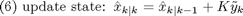
This system has been implemented in the Simulink model KalmanLTI:

With this model, the simulation results of the 2-input, 2-output and 4-state example are as follwos.
[t,x,y1,y2,y3,y4] = sim('KalmanLTI',tspan,[],u); % plot results % Display results t = t*dt; figure set(gcf,'Position',[100 100 600 800]) for k=1:4 subplot(4,1,k) plot(t,y1(:,k),'b',t,y3(:,k),'r','linewidth',2); legend('Actual state','Estimated state','Location','best') title(sprintf('state %i',k)) end xlabel('time, s') % The result is very similar to that produced by the time-variant Kalman filter.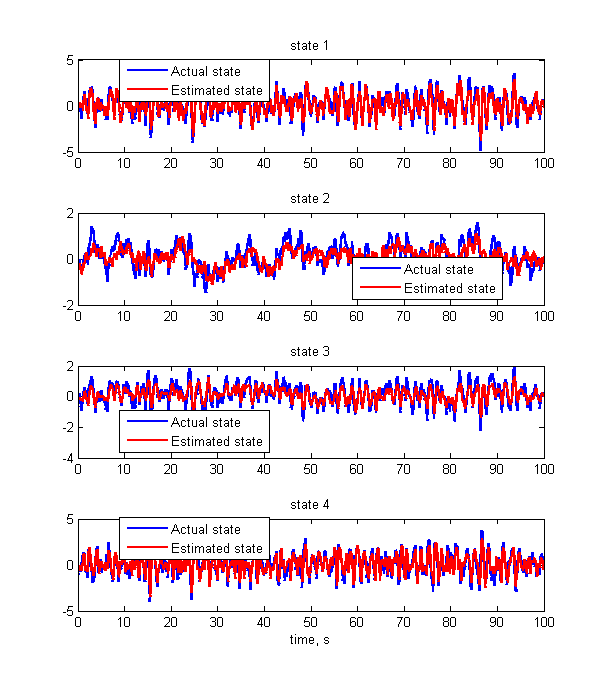